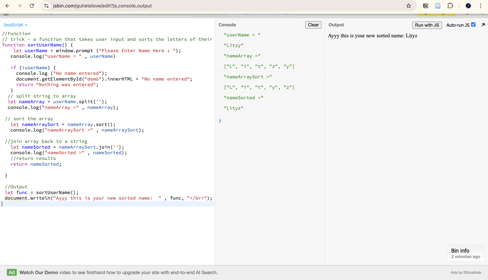
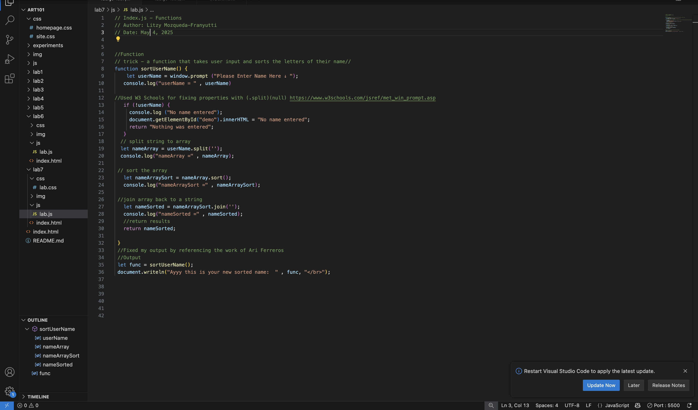

Lab 7 - Functions
Challenge
The challenge for this lab was to effecticely create functions and use arrays to make am assortment of username inputs.
Problems
I came across multiple errors, specifcally syntax errors, which was something that could have been prevented if I was testing every line of code before typing everything out. I also had problems with displaying my output but I was able to use a classmates reference on discord to help with that.
Reflection
Overall this was so far one of the most stressful labs, but it was rewarding when I was able to fix all my errors and have my function run smoothly.
Results
Images of the process below:
This image shows the inital process of drafting my code in a javascript-console^^

This image is the javascript inputed into VSCode, up and running.^^